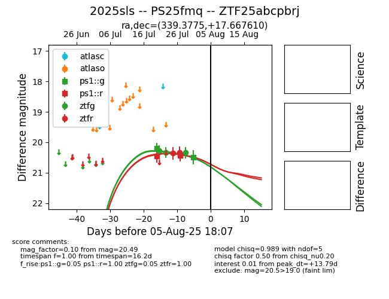

Target 2025sls at 2025-08-05 18:07, see:
FINK: fink-portal.org/2025sls
Lasair: lasair-ztf.lsst.ac.uk/objects/2025sls
ALeRCE: alerce.online/object/2025sls
TNS: wis-tns.org/object/2025sls
YSE: ziggy.ucolick.org/yse/transient_detail/2025sls
alt names
ZTF25abcpbrj (ztf,fink)
2025sls (tns,yse)
PS25fmq (panstarrs)
coordinates:
equatorial (ra, dec) = (339.3775,+17.66761)
galactic (l, b) = (83.2022,-34.67369)
photometry
last ps1::g=20.49, ps1::r=20.44, ztfg=20.34, ztfr=20.33
3 ps1::g, 2 ps1::r, 3 ztfg, 2 ztfr detections
